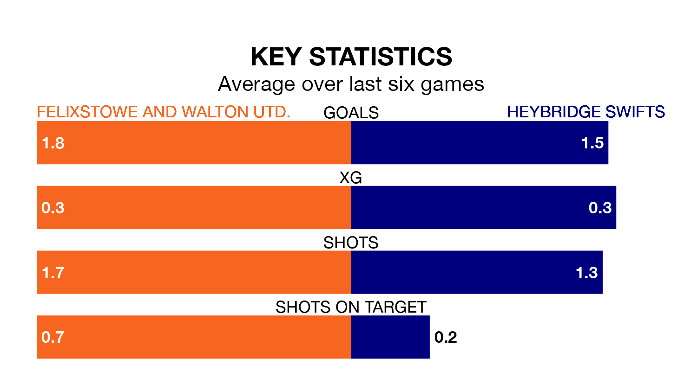

Felixstowe and Walton Utd. are on an excellent run ahead of hosting Heybridge Swifts on Saturday, with 16 points collected from their last six games.
Felixstowe & Walton Utd. have picked up five wins and one draw in their last six Isthmian League Division One – North games, and face a Heybridge Swifts side whose last six games have brought two wins and two draws.
With 56 goals in 24 games so far this season, Felixstowe & Walton Utd. are the league's third-highest scorers with 2.3 goals per game. And they are conceding fewer than average, letting in 28 goals at a rate of 1.2 per game.
Heybridge Swifts are also above average scorers, with 1.8 goals per game, compared to a league average of 1.7. They have conceded 1.2 goals per game.
The hosts are second in the table after 24 games, of which they have won 15 and drawn five, earning 50 points.
The away team are four places behind Felixstowe & Walton Utd. in sixth, with 13 wins and five draws putting them on 44 points.
In the last five years, Felixstowe & Walton Utd. and Heybridge Swifts have played each other on five occasions. Felixstowe & Walton Utd. won one of them and Heybridge Swifts the other.
On average, Felixstowe & Walton Utd. scored 1.6 goals and Heybridge Swifts 2.2 in those matches.
Their last meeting was on November 11, when Felixstowe & Walton Utd. won 3-2 away.
Felixstowe & Walton Utd.'s last match was on February 13, a 2-0 win against Brightlingsea Regent.
Heybridge Swifts beat New Salamis 2-1 last time out, on February 3.
Updated: 09:34 (UTC), 08/03/24